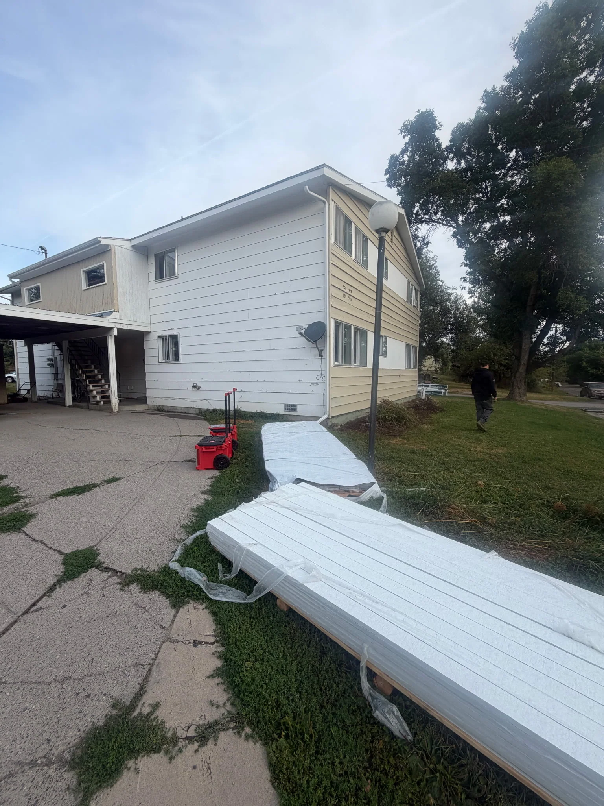
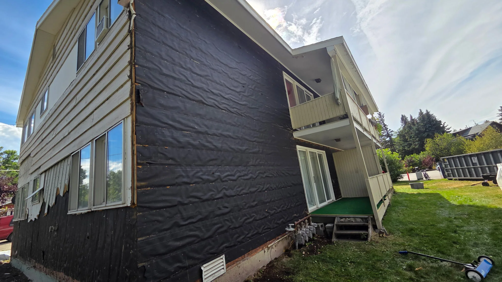
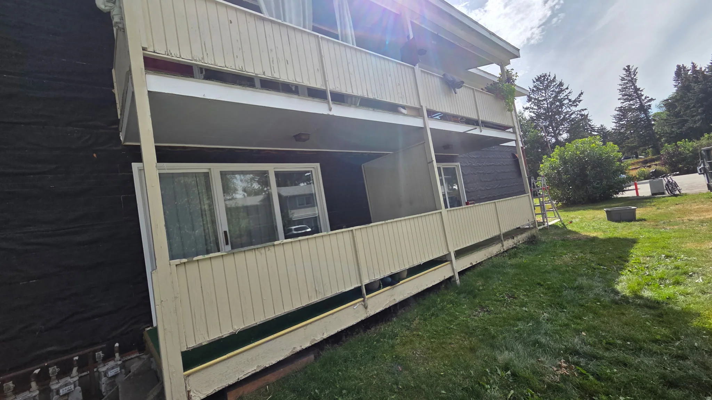
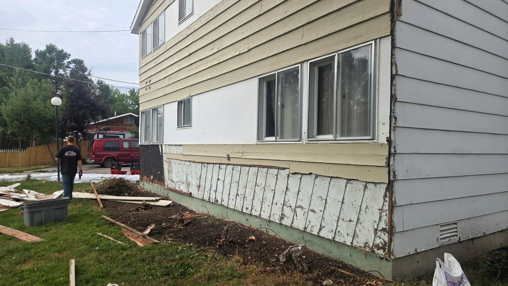
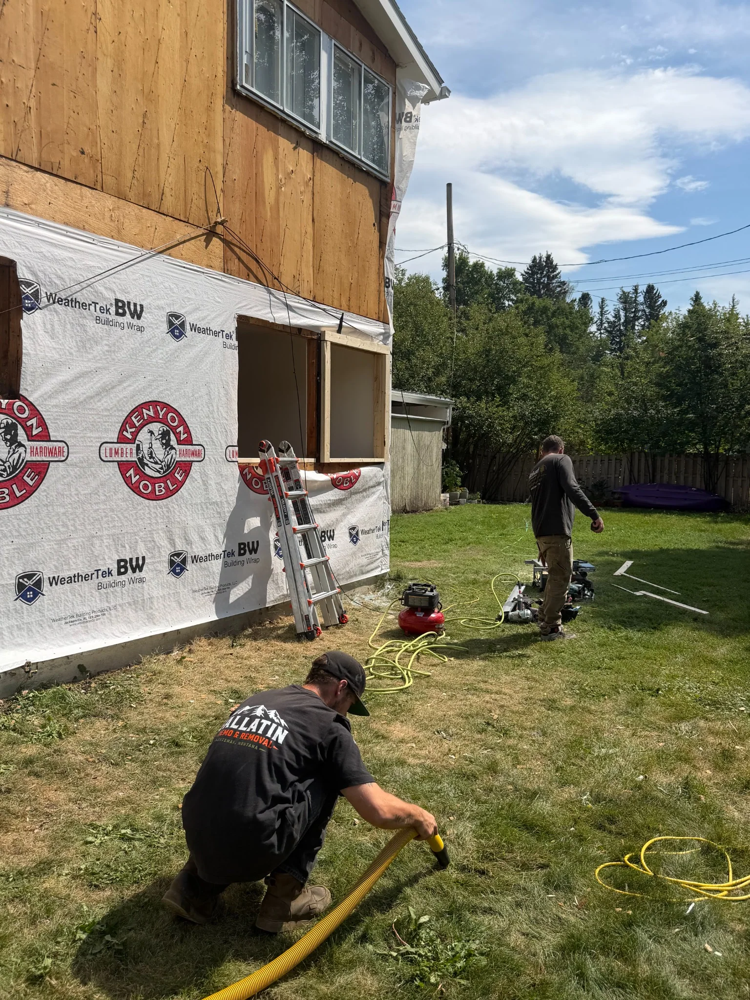

Whether you're replacing worn vinyl, removing cedar shake, or prepping for new exterior insulation and cladding, Gallatin Demo & Removal handles the heavy lift. We strip the siding, pull the fasteners, and haul off every piece — leaving the structure clean and ready for your contractor's next step.
We've completed siding removal jobs across Bozeman and the Gallatin Valley, including projects where building wrap (like WeatherTek) needed to be exposed without damage to the underlying substrate.
Get a Free Quote






Free quotes. Veteran co-owned. We haul everything off clean.